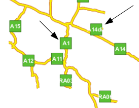
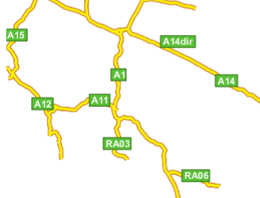

Labeling¶
이 섹션에서 표준 SLD 옵션을 통해 레이블 배치를 제어하는 상세한 방법에 대해 설명합니다. 또 보기 좋은 지도 산출물을 생산하기 위한 GeoServer의 레이블 배치 관련 여러 확장 옵션에 대해서도 설명합니다.
LabelPlacement¶
SLD 사양은 <LabelPlacement> 요소에서 사용할 수 있는, 다음 2개의 레이블 배치 대체 전략(alternative strategies)을 정의하고 있습니다.
- <PointPlacement> —레이블을 단일 포인트에 배치합니다.
- <LinePlacement> —레이블을 라인을 따라 배치합니다.
PointPlacement¶
<PointPlacement>를 사용할 경우 도형의 단일 레이블 포인트에 레이블이 배치됩니다. 라인의 경우, 눈에 보이는 라인 부분의 가운데에 이 포인트가 위치합니다. 폴리곤의 경우, 눈에 보이는 폴리곤 부분의 중심점이 이 포인트가 됩니다. 다음 하위 요소를 통해 레이블 포인트를 기준으로 하는 레이블 위치를 제어할 수 있습니다.
| 요소 | 설명 |
| <AnchorPoint> | 레이블 위치의 기준이 됩니다. 이 요소를 써서 포인트 위쪽에 레이블을 가운데 정렬시키거나, 포인트 왼쪽에 정렬시키거나, 포인트 아래쪽에 가운데 정렬시키거나 할 수 있습니다. |
| <Displacement> | X, Y 픽셀값으로 레이블을 고정 포인트(anchor point)에서 이동시킵니다. |
| <Rotation> | 각도값을 설정해서 레이블을 시계방향으로 기울입니다. |
이 옵션들을 이해하려면 예시를 보는 방법이 가장 좋습니다.
AnchorPoint¶
고정 포인트(anchor point)는 레이블 포인트를 기준으로 어디에 레이블을 배치할지 결정합니다.
<AnchorPoint>
<AnchorPointX>
0.5
</AnchorPointX>
<AnchorPointY>
0.5
</AnchorPointY>
</AnchorPoint>
고정 포인트 값은 레이블의 범위(bounding box)를 기준으로 상대적으로 설정됩니다. 범위의 좌하단은 (0, 0), 우상단은 (1, 1), 중심점은 (0.5, 0.5)입니다. 레이블 범위 안에 있는 고정 포인트의 (X, Y) 위치가 레이블 포인트에 정렬됩니다.
다음은 고정 포인트를 변경하면 레이블 위치가 어떻게 바뀌는지 보여주는 예시입니다.
X=0, Y=0.5 —(기본값) 레이블 포인트의 오른쪽에 레이블을 배치
X=0.5, Y=0.5 —레이블 포인트에 레이블의 중심점을 정렬

X=1, Y=0.5 —레이블 포인트의 왼쪽에 레이블을 배치

X=0.5, Y=0 —레이블 포인트의 위쪽에 레이블을 수평으로 가운데 정렬
Displacement¶
이동(displacement)으로 레이블의 배치를 상세하게 제어할 수 있습니다. 이동값은 고정 포인트에서 설정된 픽셀값 거리만큼(offset) 레이블의 위치를 이동시킵니다. 이 요소의 문법은 다음과 같습니다.
<Displacement>
<DisplacementX>
10
</DisplacementX>
<DisplacementY>
0
</DisplacementY>
</Displacement>
다음은 예시입니다.
X축 방향으로 10픽셀만큼 이동 (앞에 나온 기본 고정 포인트 (X=0, Y=0.5)와 비교)
Y축 방향으로 -10픽셀만큼 이동 (예시로 나오지는 않았지만 고정 포인트 (X= 0.5, Y=1.0)과 비교)
Rotation¶
<Rotation> 요소는 필수는 아니며, 설정한 각도값만큼 시계 방향으로 레이블을 기울입니다.
<Rotation>
45
</Rotation>
다음은 기울기가 어떻게 고정 포인트 및 이동과 연동되는지 보여주는 예시입니다.

45도 기울기
고정 포인트가 (X=0.5, Y=0.5)일 경우 45도 기울기
45도 기울기에서 X축 방향으로 40픽셀만큼 이동

고정 포인트가 (X=0.5, Y=0.5)일 경우 45도 기울기에서 Y축 방향으로 40픽셀만큼 이동
LinePlacement¶
<LinePlacement> 요소를 통해 (도로나 강 같은) 라인 피처에 레이블을 설정할 수 있습니다. 라인을 따라 레이블을 배치할 경우 레이블의 최적 위치 및 기울기 스타일을 찾아야 합니다.
표준 SLD LinePlacement 요소는 필수는 아닌 하위 요소인 <PerpendicularOffset>을 제공합니다. GeoServer는 특화된 옵션을 통해 라인 레이블 배치를 더 상세하게 제어할 수 있습니다. 자세한 내용은 다음을 참조하십시오.
PerpendicularOffset¶
선택 가능한 <PerpendicularOffset> 요소를 통해 라인 위쪽 혹은 아래쪽에 레이블을 배치할 수 있습니다. (앞의 <DisplacementY>에서 레이블 포인트에 대해 설명했던 내용과 유사합니다.) 이동값은 픽셀값입니다. 양의 값은 위쪽으로, 음의 값은 아래쪽으로 이동합니다.
<LabelPlacement>
<LinePlacement>
<PerpendicularOffset>
10
</PerpendicularOffset>
</LinePlacement>
</LabelPlacement>
다음은 예시입니다.

PerpendicularOffset = 0 (기본값)

PerpendicularOffset = 10
Composing labels from multiple attributes¶
<TextSymbolizer> 내 <Label> 요소에서 혼합 내용을 쓸 수 있습니다. 즉 문자열과 필터 연산식을 조합한 값을 가질 수 있다는 뜻입니다. 이 조합은 순서(concatenation)대로 해석됩니다. 이 기능을 이용해서 복수의 속성으로부터 추출된 복잡한 레이블을 생성할 수 있습니다.
예를 들어 주(州) 명칭 및 그 약자를 레이블에 함께 표출시키고 싶다면, 다음과 같이 하면 됩니다.
<Label>
<ogc:PropertyName>STATE_NAME</ogc:PropertyName> (<ogc:PropertyName>STATE_ABBR</ogc:PropertyName>)
</Label>
그러면 Texas (TX)와 같은 레이블이 표출됩니다.
공백(whitespace)이나 줄바꿈(newline)을 추가하려 할 경우 XML 문제에 부딪히게 됩니다. 레이블 요소에서 공백 처리는 “정리(collapse)”라는 XML 규칙을 따르는데, 이 규칙은 앞(leading)과 뒤(trailing) 공백을 전부 제거하고 XML 요소 내부의 모든 공백(및 줄바꿈)을 1개의 공백으로 정리합니다.
그러면 속성명 안에 줄바꿈이나 2개 이상의 공백을 삽입해야 할 경우 어떻게 하면 될까요? CDATA를 입력합니다. CDATA는 XML의 특수 절(section)로, 어떤 공백 처리 규칙도 따르지 않고 그대로(as-is) 인터프리터에 반환되어야 합니다. 예를 들어 주 명칭의 약자를 새 줄에 나타나게 하려면 다음과 같이 하십시오.
<Label>
<ogc:PropertyName>STATE_NAME</ogc:PropertyName><![CDATA[
]]>(<ogc:PropertyName>STATE_ABBR</ogc:PropertyName>)
</Label>
Geoserver Enhanced Options¶
GeoServer는 SLD 사양에 대한 확장 모듈로 여러 레이블 스타일 옵션을 제공합니다. 이 옵션들을 이용해 맵 모양을 더 상세히 제어할 수 있습니다. SLD 표준은 사용자의 필요를 충족시킬 만큼 충분한 옵션을 모두 제공하지 못 하기 때문입니다.
이 옵션들은 <TextSymbolizer>의 하위 요소로 설정됩니다.
Priority Labeling¶
선택 가능한 <Priority> 요소를 통해 레이블 우선순위를 설정할 수 있습니다. 이 요소는 렌더링 시 레이블 사이에 충돌(겹침)이 일어날 경우 어떻게 해소할지 제어합니다. 레이어 내 각 피처에 대한 상대적인 속성값을 추출하거나 계산하는 연산식을 담고 있을 수도 있습니다. 그렇지 않으면 렌더링한 맵 상에서 어떤 레이어의 레이블이 다른 레이어보다 우선하는지 설정하는 상수값을 담고 있을 수도 있습니다.
레이블의 기본 우선순위는 1000입니다.
주석
표준 SLD 충돌 해소(Standard SLD Conflict Resolution)
<Priority> 요소가 없을 경우, 혹은 레이블 한 무리가 모두 동일한 순위일 경우 표준 SLD 레이블 충돌 해소를 사용합니다. 이 전략을 사용할 경우, 서로 충돌하는 레이어 무리에서 표출될 레이어를 선택하는 작업은 본질적으로 랜덤(random)입니다.
예를 들어 다음과 같은 도시 데이터셋이 있습니다.
City Name | population
------------+------------
Yonkers | 197,818
Jersey City | 237,681
Newark | 280,123
New York | 8,107,916
도시 위치 (대축척 맵)
저지 시(Jersey City) 위치를 아는 사람보다 뉴욕(New York) 시를 아는 사람이 더 많습니다. 따라서 “New York” 레이블에 우선순위를 부여해서 “Jersey City”와 충돌할(겹칠) 경우 “New York”이 보이게 하고 싶습니다. 이렇게 하려면 다음 코드를 <TextSymbolizer>에 삽입합니다.
<Priority>
<PropertyName>population</PropertyName>
</Priority>
이렇게 하면 소축척 맵에서 인구가 적은 다른 도시보다 뉴욕 시의 레이블이 먼저 표출됩니다.
도시 위치 (소축척 맵)
레이블에 우선순위를 부여하지 않았다면 저지 시의 레이블이 뉴욕 시 위에 겹쳐져 지도를 보기 어려웠을 것입니다. 많은 피처가 보이는 축척에서 대도시가 소도시보다 잘 보이게 하는 레이블 우선순위 작업은 꼭 필요합니다.

Grouping Features (group)¶
group 옵션을 통해 논리적 무리(logical group)에 포함된 복수의 피처에 단일 레이블을 표출시킬 수 있습니다.
<VendorOption name="group">yes</VendorOption>
동일한 레이블 텍스트를 가진 모든 피처를 선별하고 해당 무리를 대표하는 도형을 선택하는 무리짓기(grouping) 작업은 다음과 같은 규칙을 따릅니다.
| 도형 | 레이블 포인트 |
| 포인트 집합 | 뷰(view) 사각형 내부의 첫번째 포인트를 씁니다. |
| 라인 집합 | 라인을 하나로 결합(join)하고, 뷰 사각형에 맞춰 자른(clip) 다음, 가장 긴 경로를 씁니다. |
| 폴리곤 집합 | 폴리곤을 뷰 사각형에 맞춰 자른 다음 가장 넓은 폴리곤을 씁니다. |
원한다면 labelAllGroup 옵션을 설정해서 무리에 포함된 모든 요소에 레이블을 표출시킬 수도 있습니다.
경고
레이블이 한 무리로 모아야 하는 피처들을 정말로 가리켜야 합니다. 예를 들어 도시명만으로 무리짓기 작업을 하면 프랑스 파리(Paris)와 텍사스 주의 패리스(Paris) 시 둘 다 포함하는 무리를 생성할 수 있습니다.
도로 데이터는 무리짓기 기능이 왜 유용한지 보여주는 전통적인 예시입니다. 보통 “Main Street”의 각 블록마다 레이블을 표출하는 대신 전체 “Main Street”에 단일 레이블을 표출하는 편이 낫기 때문입니다.
group 옵션이 (기본값대로) 꺼져 있을 경우, 무리짓기 작업이 실행되지 않아 다음과 같이 (레이블 충돌이 일어나지 않을 경우) 모든 블록 피처에 레이블이 표출됩니다.
group 옵션을 사용할 경우, 동일 레이블을 가진 도형을 한 무리로 묶어 전체 무리를 바탕으로 레이블 위치를 결정합니다. 이렇게 하면 훨씬 보기 좋은 맵을 생산할 수 있습니다.

labelAllGroup¶
group 옵션과 함께 labelAllGroup 옵션을 쓸 수 있습니다. (Grouping Features (group)을 참조하십시오.) 이 옵션을 쓰면 라인 무리에서 가장 긴 라인만이 아니라 연결되지 않은(disjoint) 모든 경로에 레이블을 표출합니다.
<VendorOption name="labelAllGroup">true</VendorOption>
Overlapping and Separating Labels (spaceAround)¶
GeoServer는 기본적으로 레이블이 “겹쳐 보이도록” 렌더링하지 않습니다. spaceAround 옵션을 써서 레이블이 서로 겹치게 하거나, 레이블 주위에 여백을 추가할 수 있습니다. 옵션에 설정할 값은 크기를 나타내는 양이나 음의 픽셀값입니다.
<VendorOption name="spaceAround">10</VendorOption>
기본값인 0의 경우, 레이블의 범위(bounding box)는 다른 레이블의 범위를 침범하지 못 합니다.
spaceAround 값이 음수일 경우, 레이블이 서로 겹쳐질 수 있습니다.

spaceAround 값이 10일 경우, 각 레이블이 서로 적어도 20픽셀만큼은 떨어져야 합니다.

양의 spaceAround 값은 사용자의 기대보다 2배 넓은 여백을 만듭니다. 어떤 레이블의 spaceAround 값을 5로 설정하고, (다른 TextSymbolizer에서) 다른 레이블의 spaceAround 값을 3으로 설정하면, 이 둘의 거리는 8이 되어야 하기 때문입니다. 첫번째 심볼라이저에서 “5”로 설정된 2개의 레이블은 그러므로 서로에게서 각각 5픽셀만큼 떨어져야 하기 때문에 10픽셀 떨어지게 되는 것입니다.
주석
서로 다른 TextSymbolizer 값 사이의 상호 작용
SLD 파일 안에 각각 다른 spaceAround 옵션을 가진 여러 개의 TextSymbolizer가 있을 수 있습니다. 모든 spaceAround 옵션값이 0 이상일 경우, 기대한 대로 산출물이 나올 것입니다. 음의 값이 있을 경우(‘겹쳐 보이도록 할 경우’), 사용자가 겹치면 안 된다고 설정한 레이블이 다른 레이블에 가려질 수 있습니다. 이런 결과가 마음에 들지 않는다면, 변경하는 작업이 어렵지는 않습니다. 마음껏 패치를 제출해주세요!
followLine¶
followLine을 통해 라인의 곡선을 따라 레이블을 배치할 수 있습니다. 이 옵션을 사용하려면 <TextSymbolizer>에 다음과 같은 코드를 추가하십시오.
<VendorOption name="followLine">true</VendorOption>
레이블이 라인을 따라 배치되도록 하려면 <LinePlacement> 옵션을 함께 사용해야 합니다.
<LabelPlacement>
<LinePlacement/>
</LabelPlacement>
maxDisplacement¶
maxDisplacement 옵션은 라인을 따라서, 포인트 주위에서, 폴리곤 내부에서 레이블의 이동을 제어합니다.
라인의 경우, GeoServer는 일반적으로 라인의 가운데 포인트에 레이블을 표출합니다. 레이블이 다른 레이블과 충돌할 경우 아예 표출하지 않을 수도 있습니다. 이 옵션을 활성화시키면, 충돌을 피하기 위해 레이블을 미리 계산된 레이블 포인트에서 라인을 따라 maxDisplacement 픽셀값 범위 안에서 임의의 위치로 이동시킵니다.
repeat과 연결해서 사용할 경우, maxDisplacement 값이 repeat 값보다 언제나 작아야 합니다.
포인트의 경우 이 옵션을 쓰면, maxDisplacement 값에 도달할 때까지 포인트 주위를 도는 원의 지름을 단계적으로 늘려가며 레이블을 배치시킬 빈 공간을 찾습니다. 폴리곤의 경우도 마찬가지로, 폴리곤의 레이블 포인트(보통 중심점) 주위를 돌며 빈 공간을 찾습니다.
<VendorOption name="maxDisplacement">10</VendorOption>
repeat¶
repeat 옵션은 GeoServer가 라인을 따라 몇 번이나 레이블을 표출할지 결정합니다. 일반적으로 GeoServer는 각 라인의 길이에 상관없이 한번만 레이블을 표출합니다. 이 옵션에 양의 값을 설정하면 라인을 따라 repeat 픽셀값마다 레이블을 표출할 것입니다. 길거나 복잡한 (등고선 같은) 라인의 경우 이 옵션으로 좀 더 많은 정보를 제공하는 레이블을 만들 수 있습니다.
<VendorOption name="repeat">100</VendorOption>
maxAngleDelta¶
followLine과 연결해서 사용할 경우, maxAngleDelta 옵션은 곡선 레이블 내의 어떤 문자와 이어지는 다음 문자 사이의 최대 각도를 360도 값으로 설정합니다. 설정한 값이 클수록 시각적으로 분리되거나 서로 겹치는 문자를 생성할 수 있습니다. 30도보다 큰 값을 쓰지 않기를 권장합니다.
<VendorOption name="maxAngleDelta">15</VendorOption>
autoWrap¶
autoWrap 옵션에서 설정한 너비(픽셀값)보다 레이블 텍스트가 길 경우 줄바꿈(wrap)을 합니다. 이 값은 텍스트에서 가장 긴 단어를 포용할 만큼 넓어야 합니다. 그렇지 않으면 한 단어가 여러 줄로 갈라질 수 있습니다.
<VendorOption name="autoWrap">50</VendorOption>

autoWrap 옵션을 활성화한 레이블
forceLeftToRight¶
렌더러(renderer)는 가독성을 최대로 하기 위해 라인을 따라 레이블을 그릴 때 텍스트가 똑바른 방향을 향하도록 하려 합니다. 즉 텍스트를 올바른 방향으로 표출하기 위해 레이블이 라인의 방향을 따르지 않고 오히려 180° 회전하는 경우가 있다는 뜻입니다. 그러나 레이블의 방향을 변경하는 것이 안 좋은 결과를 내는 경우도 있습니다. 예를 들면 레이블이 라인의 방향을 나타내는 화살표인 경우입니다.
forceLeftToRight 옵션을 false로 설정해서 레이블이 뒤집어지는 것을 방지하고, 레이블이 언제나 해당 라인의 고유한 방향을 따라 표출되도록 할 수 있습니다.
<VendorOption name="forceLeftToRight">false</VendorOption>
conflictResolution¶
기본적으로 레이블은 충돌 해소(conflict resolution)에 종속됩니다. 즉 이미 그려진 레이블과 겹치는 레이블은 표출되지 않습니다. conflictResolution 옵션을 false로 설정하면 해당 레이블이 충돌 해소를 우회하도록 합니다. 즉 해당 레이블이 다른 레이블 위에 그려질 수 있고, 다른 레이블도 해당 레이블 위에 그려질 수 있다는 뜻입니다.
<VendorOption name="conflictResolution">false</VendorOption>
goodnessOfFit¶
Geoserver는 레이블이 표출되는 도형과 레이블이 특히 잘 맞지 않는(bad fit) 경우 레이블을 제거합니다.
| 도형 | Goodness of Fit 알고리듬 |
| 포인트 | 레이블이 언제나 포인트에 배치되기 때문에 언제나 1.0을 반환합니다. |
| 라인 | 레이블이 언제나 라인을 따라 배치되기 때문에 언제나 1.0을 반환합니다. |
| 폴리곤 | 레이블의 거의 모든 글자를 추출합니다. 이 글자들의 포인트에서 폴리곤까지의 거리를 계산하고, 폴리곤과 얼마나 가까운지를 기준으로 각 거리를 검사합니다. (LabelCacheDefault#goodnessOfFit() 참조) |
기본값은 0.5이지만, 다음 코드를 사용해서 변경할 수 있습니다.
<VendorOption name="goodnessOfFit">0.3</VendorOption>
polygonAlign¶
GeoServer는 일반적으로 폴리곤 내부에 레이블을 수평으로 배치하려 합니다. 레이블 위치가 선점되어 있거나 폴리곤 안에 충분히 들어가지 않으면 표출하지 않습니다. 이 옵션을 써서 GeoServer가 레이블에 기울기를 적용하도록 할 수 있습니다.
<VendorOption name="polygonAlign">mbr</VendorOption>
| 옵션 | 설명 |
| manual | 기본값입니다. <Rotation> 태그에 직접 설정된 기울기만 적용합니다. |
| ortho | 레이블이 수평 방향으로 폴리곤 안에 들어가지 않고, 폴리곤의 너비보다 높이가 더 길 경우, 수직 정렬도 사용합니다. |
| mbr | 레이블이 수평 방향으로 폴리곤 안에 들어가지 않을 경우 최소 범위 사각형(minimum bounding rectangle)을 계산해서 이 범위에 맞춰 레이블을 정렬하는 방법도 사용합니다. |
graphic-resize¶
레이블에 <Graphic>을 설정하면 기본적으로 그래픽 자체 크기 및 비율에 따라 표출됩니다. graphic-resize 옵션을 통해 레이블의 텍스트를 완전히 담을 수 있도록 그래칙을 확대하거나(magnify) 늘릴(stretch) 수 있습니다. 이 옵션을 사용할 경우 graphic-margin 옵션도 설정해야 할 수 있습니다.
<VendorOption name="graphic-resize">stretch</VendorOption>
| 옵션 | 설명 |
| none | (기본값) 그래픽이 자체 크기대로 표출됩니다. |
| proportional | 레이블 텍스트를 담을 수 있도록 그래픽 크기를 비율에 따라 확대합니다. |
| stretch | 레이블 텍스트를 담을 수 있도록 원래 비율을 무시하고(anisotropically) 그래픽 크기를 늘립니다. |

|

|
| 원래 크기의 “정사각형”그래픽 마크를 사용한 레이블 | “graphic-resize”=stretch 및 “graphic-margin”=3 을 사용한 레이블 |
graphic-margin¶
graphic-resize 옵션을 설정했을 경우, graphic-margin 옵션을 통해 레이블 텍스트 주위의 여백(픽셀값)을 설정합니다.
<VendorOption name="graphic-margin">margin</VendorOption>